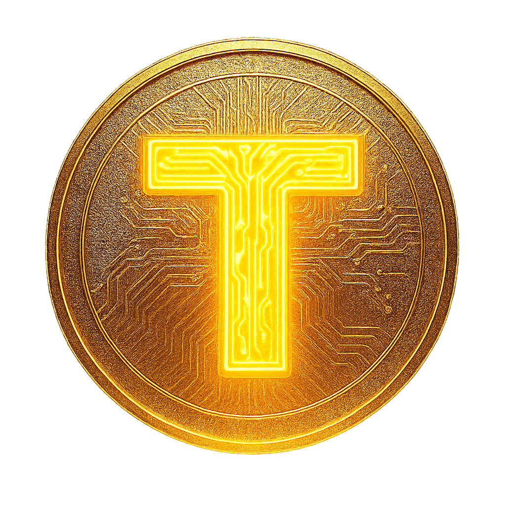

The AI-Born Web3 Ecosystem — Built for Utility, Driven by Community.
(AI-designed, User-owned — AI-Born)
TUMO — Time Utility Machine Organizer:
An AI·Web3 ecosystem designed to save time and create real utility value.